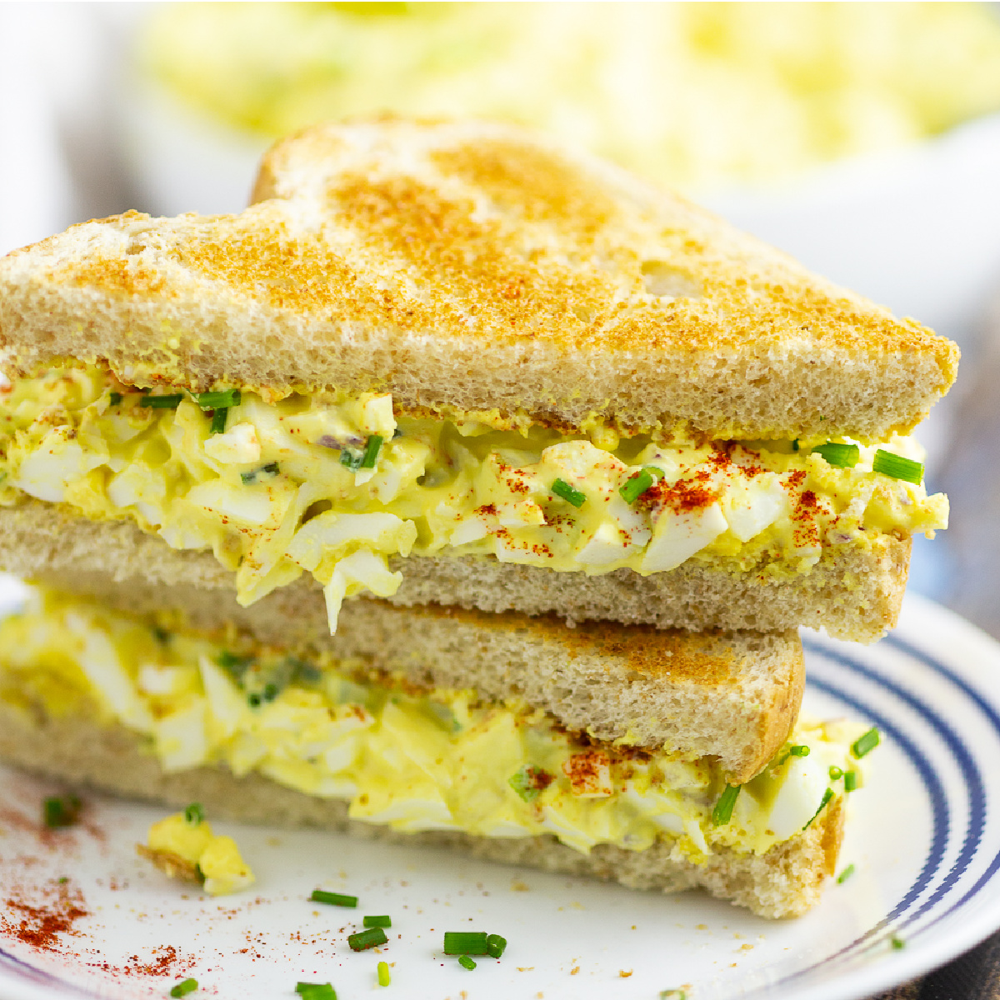

Egg Salad Sandwich Recipe

Make deli-worthy egg salad sandwiches at home with this top-rated egg
salad recipe! You'll come back to it again and again.
Ingredients
8 eggs
1/2 cup of mayonnaise
1/4 cup chopped green onion
1 tsp prepared yellow mustard
1/4 tsp paprika
salt and pepper to taste
Steps
- Place eggs in a saucepan and cover with cold water.
- Bring water to a boil and immediately remove from heat
- Cover and let eggs stand in ot water for 10 to 12 minutes
- Remove from ot water, cool, peel, and chop
- Place chopped eggs in a bowl; stir in mayonnaise, green onion, and mustard
- Season with paprika, salt and pepper
- Stir and serve on your favorite bread or crackers